THÀNH TỰU CHƯNG CẤT
Ngay từ lần đầu tiên ra mắt vào năm 1992, Johnnie Walker Blue Label đã thay đổi hoàn toàn cuộc chơi của Scotch Whisky xa xỉ để nắm giữ danh hiệu chai whisky trọn vẹn và tuyệt hảo nhất. Chất lượng thượng hạng của Johnnie Walker Blue Label nằm trong những thùng gỗ sồi cao cấp, được tuyển chọn khắt khe, với tỉ lệ 1 trên 10.000 thùng để ra được hương vị chuẩn xác. Johnnie Walker Blue Label khai mở chiều sâu hương vị, từ mùi hương tròn đầy kích thích đầu mũi, đến chất vị cay nồng của gỗ đàn hương, thuốc lá và sô cô la đen ướp trong làn khói thơm, nhè nhẹ dẫn dắt đến cái kết kéo dài cùng khói và tiêu cay, bừng lên như một nốt nhạc cân bằng với toàn bộ phần còn lại.
 
